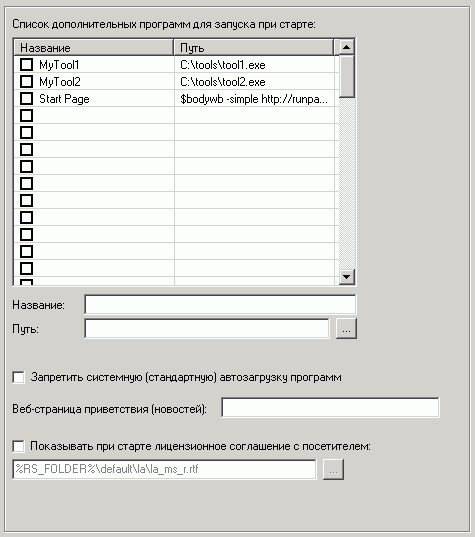

| Обслуживание: Автозагрузка |

На этой вкладке есть возможность запретить стандартную автозагрузку Windows в целях дополнительной безопасности.
Но также можно и добавить программы, которые будут запускаться всегда при старте шелла (это может быть клиент программы контроля клуба или другие утилиты).
Если путь начинается с символа "$", то предполагается exe-файл в директории шелла.
Также можно устанавливать файлы реестра .reg
Посмотреть список загружаемых программ в стандартной автозагрузке Windows можно в ветках реестра (запустив regedit.exe):
HKEY_LOCAL_MACHINE\SOFTWARE\Microsoft\Windows\CurrentVersion\Run
HKEY_CURRENT_USER\SOFTWARE\Microsoft\Windows\CurrentVersion\Run